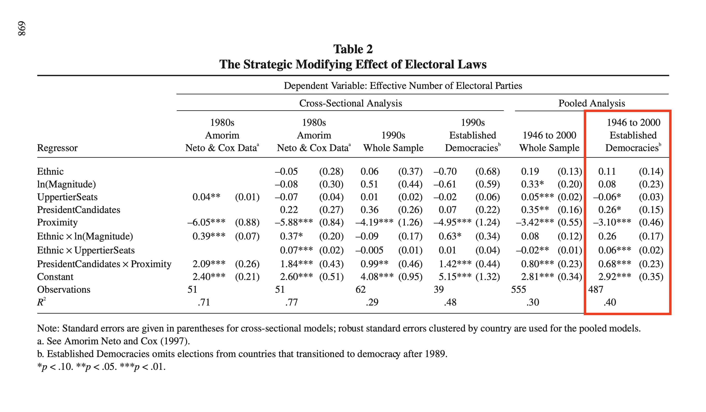
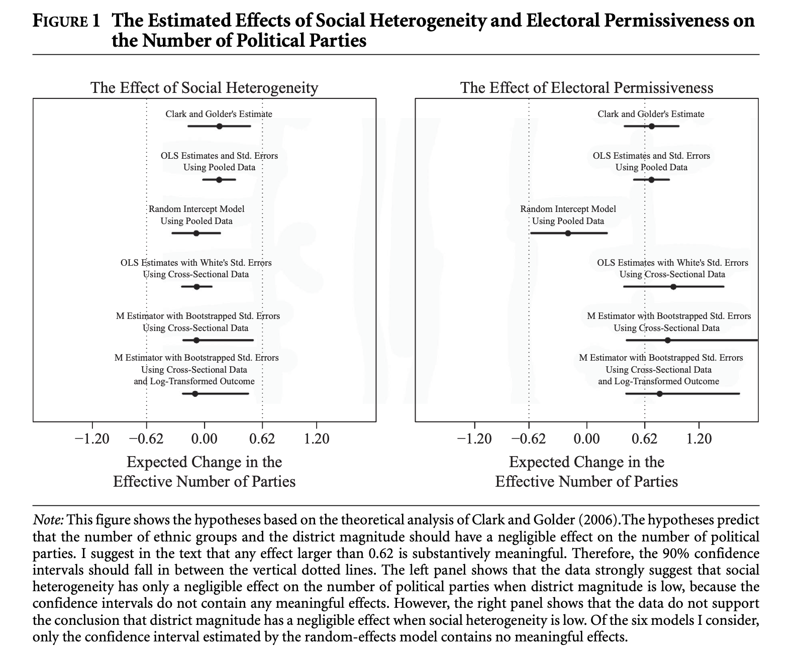

Reproducing the Clark and Golder (2006) Example from Rainey (2014)
hypothesis tests
confidence intervals
equivalence tests
negligible effects
computing
R
marginaleffects
In this post, I try out the {marginaleffects} package to conduct two one-sided tests (TOSTs) to test a hypothesis of a negligible effect (i.e., equivalence testing).
Author
Carlisle Rainey
Published
August 18, 2023
Background on arguing for a negligible effect
First, a bit of background on the paper and the idea of hypothesizing that a variable “has no effect.”
I remember sitting in a talk as a first-year graduate student, and the speaker said something like: “I expect no effect here, and, just as I expected, the difference is not statistically significant.” I was a little bit taken aback—of course, that’s not a compelling argument for a null effect. But I saw this approach taken again and again in published work.
My first publication was an AJPS article (Rainey 2014) explaining why this doesn’t work well and how to do it better.
Here’s what I wrote in that paper:
Hypothesis testing is a powerful empirical argument not because it shows that the data are consistent with the research hypothesis, but because it shows that the data are inconsistent with other hypotheses (i.e., the null hypothesis). However, researchers sometimes reverse this logic when arguing for a negligible effect, showing only that the data are consistent with “no effect” and failing to show that the data are inconsistent with meaningful effects. When researchers argue that a variable has “no effect” because its confidence interval contains zero, they take no steps to rule out large, meaningful effects, making the empirical claim considerably less persuasive (Altman and Bland 1995; Gill 1999; Nickerson 2000).
But here’s a critical point, it’s impossible to reject every hypothesis except exactly no effect. Instead, the researcher must define a range of substantively “negligible” effects. This requires a substantive judgement about those effects that are negligible and those that are not.
Here’s what I wrote:
Researchers who wish to argue for a negligible effect must precisely define the set of effects that are deemed “negligible” as well as the set of effects that are “meaningful.” This requires defining the smallest substantively meaningful effect, which I denote as \(m\). The definition must be debated by substantive scholars for any given context because the appropriate \(m\) varies widely across applications.
Clark and Golder (2006)
Clark and Golder (2006) offer a nice example of this sort of hypothesis. I’ll refer you there and to Rainey 2014 for a complete discussion of their idea, but I’ll motivate it briefly here.
Explaining why a country might have only a few (i.e., two) parties, Clark and Golder write:
First, it could be the case that the demand for parties is low because there are few social cleavages. In this situation, there would be few parties whether the electoral institutions were permissive or not. Second, it could be the case that the electoral system is not permissive. In this situation, there would be a small number of parties even if the demand for political parties were high. Only a polity characterized by both a high degree of social heterogeneity and a highly permissive electoral system is expected to produce a large number of parties. (p. 683)
Thus, they expect that electoral institutions won’t matter in socially homogenous systems. And they expect that social heterogeneity won’t matter in electoral systems that are not permissive.
Reproducing Clark and Golder (2006)
Before computing their specific quantities of interest, let’s reproduce their regression model. Here’s their table that we’re trying to reproduce.

And here’s a reproduction of their estimates using the data from the {crdata} package on GitHub.
# install my data packages from githubdevtools::install_github("carlislerainey/crdata") # only updates if newer version available# load clark and golder's data setcg <- crdata::cg2006# reproduce their estimatesf <- enep ~ eneg*log(average_magnitude) + eneg*upper_tier + en_pres*proximityfit <-lm(f, data = cg)# cluster-robust standard errorsSigma_hat <- sandwich::vcovCL(fit, cluster =~ country, type ="HC1")# regression tablemodelsummary::modelsummary(fit, vcov = Sigma_hat, fmt =2, shape = term ~ model + statistic)
(1)
Est.
S.E.
(Intercept)
2.92
0.35
eneg
0.11
0.14
log(average_magnitude)
0.08
0.23
upper_tier
−0.06
0.03
en_pres
0.26
0.15
proximity
−3.10
0.46
eneg × log(average_magnitude)
0.26
0.17
eneg × upper_tier
0.06
0.02
en_pres × proximity
0.68
0.23
Success!
They use averge_magnitude to measure the permissiveness of the electoral system and eneg to measure social heterogeneity.
Using comparisons() to compute the effects
Now let’s compute the two quantities of interest. Clark and Golder argue for two negligible effects, which I make really concrete below.
Hypothesis 1 Increasing the effective number of ethnic groups from the 10th percentile (1.06) to the 90th percentile (2.48) will not lead to a substantively meaningful change in the effective number of political parties when the district magnitude is one.
Hypothesis 2 Increasing the district magnitude from one to seven will not lead to a substantively meaningful change in the effective number of political parties when the effective number of ethnic groups is one.
And comparing the U.S. and the U.K., I argue that the smallest substantively interesting effect is 0.62. In Rainey (2014), I made this plot. I want to reproduce it here.

These differences (and the 90% CIs) is really easy to compute using {marginaleffects}! (I’m only doing Clark and Golder’s original results, not any of the robustness checks)
library(tidyverse)
── Attaching core tidyverse packages ──────────────────────── tidyverse 2.0.0 ──
✔ dplyr 1.1.2 ✔ readr 2.1.4
✔ forcats 1.0.0 ✔ stringr 1.5.0
✔ ggplot2 3.4.3 ✔ tibble 3.2.1
✔ lubridate 1.9.2 ✔ tidyr 1.3.0
✔ purrr 1.0.2
── Conflicts ────────────────────────────────────────── tidyverse_conflicts() ──
✖ dplyr::filter() masks stats::filter()
✖ dplyr::lag() masks stats::lag()
ℹ Use the conflicted package (<http://conflicted.r-lib.org/>) to force all conflicts to become errors
library(marginaleffects)# the smallest substantively interesting effectm <-0.62# a data frame setting the values of the "other" variablesX_c <-data.frame(eneg =1.06, # low valueaverage_magnitude =1, # low valueupper_tier =0,en_pres =0, proximity =0)# compute the comparison for enegeneg_comp <-comparisons(fit,vcov = Sigma_hat,newdata = X_c, variables =list("eneg"=c(1.06, 2.48)), # low to high valueconf_level =0.90)# compute the comparison for average magnitudemag_comp<-comparisons(fit,vcov = Sigma_hat,newdata = X_c, variables =list("average_magnitude"=c(1, 7)), # low to high valueconf_level =0.90)
Now we can just plot them with ggplot() and check whether the entire interval falls inside the bounds.
# bind the comparisons together and plotcomp <-bind_rows(eneg_comp, mag_comp)ggplot(comp, aes(x = estimate,xmin = conf.low,xmax = conf.high, y = term)) +geom_vline(xintercept =c(-m, m), linetype ="dashed") +geom_errorbarh() +geom_point()
In this case, we conclude that social heterogeneity (eneg) has a negligible effect because the 90% CI only contains substantively negligible values. However, the 90% CI for district magnitude (average_magnitude) contains substantively neglible and meaningful values, so we cannot reject the null hypothesis of a meaningful effect.
Computing the TOST p-values using hypotheses()
It’s then almost trivial to use the hypotheses() function to compute the TOST p-values.
Checking that the 90% CIs fall within the bounds created by the smallest substantively-meaningful effect is equivalent to checking whether the TOST p-value (i.e., the p(Equiv) column) is less than 0.05, so our conclusions are (and must be) identical.
Final thoughts
{marginaleffects} is a great package. I think it’s the first package in which the syntax matches the way I think about computing quantities of interest. That said, this is just my first try at it. But I’m very impressed so far.
The {marginaleffects} book has a whole chapter on equivalence tests. My only caution is that there is a mismatch between 95% confidence intervals and equivalence tests. By default, {marginaleffects} reports a 95% CI, even when producing a p-value for an equivalence test. However, the 90% confidence interval correspondents to a size-5% equivalence test. So if you’re using {marginaleffects} to do equivalence tests, I recommend setting conf_level = 0.90.1
For a more recent example, Jake Jares and Neil Malhotra have a new paper that discusses negligible effects and hypothesis tests in a way that I find clear and compelling. It’s an excellent model. See pp. 26-31. They “show that improved compensation outcomes had negligible impacts on Republican farmers’ midterm turnout and campaign contributions, even though such variation in benefits significantly affected whether farmers viewed the intervention as helpful.”
1 I would make a similar point about one-sided tests as well, but that’s less correct, because it should be a one-sided 95% CI.
Complete code
To make this easy to reproduce, here’s the complete code:
# load packageslibrary(tidyverse)library(modelsummary)library(marginaleffects)# install my data packages from githubdevtools::install_github("carlislerainey/crdata") # only updates if newer version available# load clark and golder's data setcg <- crdata::cg2006# reproduce their estimatesf <- enep ~ eneg*log(average_magnitude) + eneg*upper_tier + en_pres*proximityfit <-lm(f, data = cg)# cluster-robust standard errorsSigma_hat <- sandwich::vcovCL(fit, cluster =~ country, type ="HC1")# regression tablemodelsummary(fit, vcov = Sigma_hat, fmt =2, shape = term ~ model + statistic)# the smallest substantively interesting effectm <-0.62# a data frame setting the values of the "other" variablesX_c <-data.frame(eneg =1.06, # low valueaverage_magnitude =1, # low valueupper_tier =0,en_pres =0, proximity =0)# compute the comparison for enegeneg_comp <-comparisons(fit,vcov = Sigma_hat,newdata = X_c, variables =list("eneg"=c(1.06, 2.48)), # low to high valueconf_level =0.90)# compute the comparison for average magnitudemag_comp<-comparisons(fit,vcov = Sigma_hat,newdata = X_c, variables =list("average_magnitude"=c(1, 7)), # low to high valueconf_level =0.90)# bind the comparisons together and plotcomp <-bind_rows(eneg_comp, mag_comp)ggplot(comp, aes(x = estimate,xmin = conf.low,xmax = conf.high, y = term)) +geom_vline(xintercept =c(-m, m), linetype ="dashed") +geom_errorbarh() +geom_point() # hypothesis tests (TOSTs)hypotheses(eneg_comp, equivalence =c(-m, m))hypotheses(mag_comp, equivalence =c(-m, m))